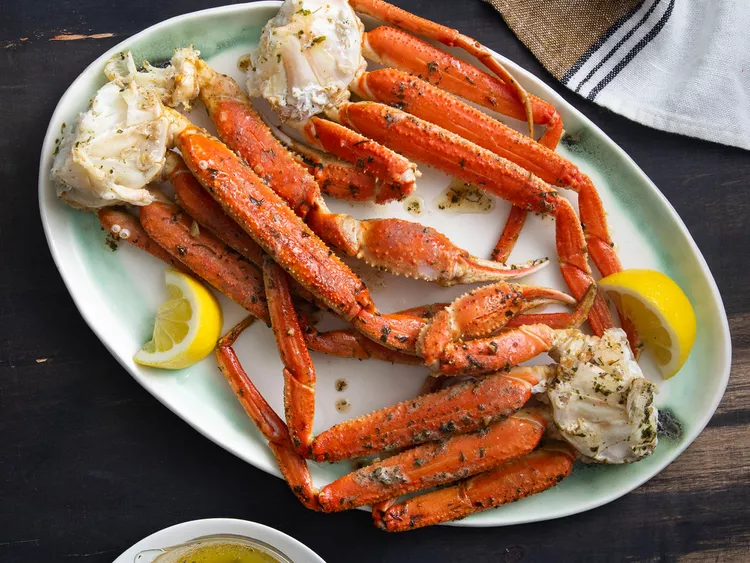

Crab

Ingredients
- 1 pound Snow Crab clusters, thawed if necessary
- ¼ cup butter
- 1 clove garlic, minced
- 1 ½ teaspoons dried parsley
- ¼ teaspoon freshly ground black pepper
Directions
- Cut a slit, length-wise, into the shell of each piece of crab.
- SMelt butter in a large skillet over medium heat. Add garlic and cook until translucent, 1 to 2 minutes. Stir in parsley, pepper, and salt. Continue to heat mixture until bubbling.
- Add crab legs to the skillet; toss to coat with butter mixture. Simmer until completely heated through, 5 to 6 minutes.
- Serve hot and enjoy!
Go back to the home page